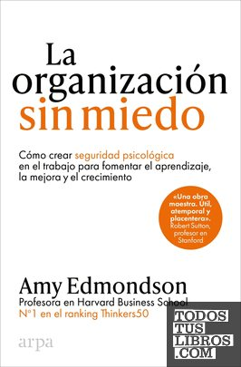

La organización sin miedoAmy C. Edmondson

La organización sin miedo
Amy C. Edmondson
Introduce la seguridad psicológica: equipos donde se puede hablar, preguntar y equivocarse.
- Publicado originalmente
- 2018
- Enfoque
- Divulgación científica
- Para quién
- Personas que trabajan en equipos u organizaciones
- Ficha bibliográfica
- Todos tus libros (CEGAL)
Este libro tiene derechos de autor, así que no lo alojamos. Te dejamos la ficha para que sepas de qué trata y lo busques en una librería o biblioteca.